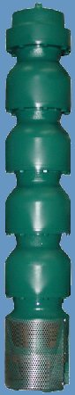

|
|
Tazones intermedios
Para una mayor eficiencia y resistenacia a la abrasión
los tazones son esmaltaods en su interior, estos tazones son
fabricados en hieroo fundido clase 30.
Impulsores
Fabricados en bronce y diseñados para un desempeño
hidraulico de alta eficiencia y alto rango.
Bujes intermedios
Fabricados en bronce y caucho especial de alta resistencia
a la abrasión, de forma estándar. Para mayor
resistencia a la abrasión se recomienda usar bujes
de caucho con casquillo de acero inoxidable para una vida
útil mayor.
Candados Cónicos
Diseñados para asegurar el impulsor a la flecha de
la bomba con gran precisión.
Tazón de Descarga
Fabricado en hierro fundido y con tamaños de descarga
estándar y opcionales.
Buje Largo de Descarga
Fabricado en bronce. Asegura la estabilidad de la flecha y
le da mayor resistencia a la abrasión.
|
|
Adaptador
de Succión
Fabicado en hierro dúctil para mayor resistencia y con
área abierta para mejor acceso al cople bomba motor.
Entrada de Succión
Diseñada para una entrada caudal con la menor turbulencia
y con un colador de acero inoxidable para evitar la entrada
de sólidos.
Arandela de Empuje
esta pieza permite a la bomba tener un margen de seguridad adicional
contra los empujes axiales momentáneos hacia arriba,
que ocurren al arrancar la bomba.
Cople Motor-Bomba
Fabricado en acero inoxidable y diseñado de manera precisa
para una transmisión de potencia inmejorable.
Flecha de la Bomba
El acero inoxidable 416 le permite a la flecha tener una alta
resistencia a los esfuerzos y también una alta resistencia
a la corrosión.
Acoplamiento Bomba-Motor
Acoplamiento estándar NEMA para motores sumergibles. |